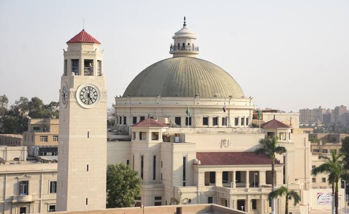

Cairo University also known as the Egyptian University from 1908 to 1940, and King Fuad I University and Fu'ād al-Awwal University from 1940 to 1952, is Egypt's premier public university. Its main campus is in Giza, immediately across the Nile from Cairo. It was founded on 21 December 1908; , after being housed in various parts of Cairo, its faculties, beginning with the Faculty of Arts, were established on its current main campus in Giza in October 1929. It is the second oldest institution of higher education in Egypt after Al Azhar University, notwithstanding the pre-existing higher professional schools that later became constituent colleges of the university. It was founded and funded as the Egyptian University by a committee of private citizens with royal patronage in 1908 and became a state institution under King Fuad I in 1925. In 1940, four years following his death, the university was renamed King Fuad I University in his honor. It was renamed a second time after the Egyptian revolution of 1952. The university currently enrolls approximately 155,000 students in 20 faculties and 3 institutions. It counts three Nobel Laureates among its graduates and is one of the 50 largest institutions of higher education in the world by enrollment.
 next